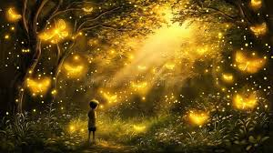
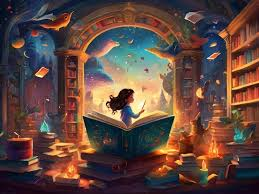
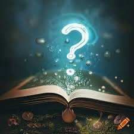

The glowing butterfly flew ahead, lighting the way through the mist. As they walked forward, the mist began to open like a curtain.
In front of them was a library like no other. Shelves made of branches reached high into the sky, and books floated all around, flipping their pages like they were talking to each other.
"This place feels alive," Iona whispered as a book gently floated toward them and opened on its own.
Amaia slowly reached out and touched the glowing pages. Then, a soft voice echoed through the air:
"To learn the secret, you must answer this riddle..."
Riddle: "I have keys but open no locks, I have space but no room, you can enter but not go outside. What am I?"
They looked at each other. The answer was close—they just had to find it.